Modo conductor
Manuel González
Viaje de las 16:24
Ruta 1 · Campus Central – Santa Fe
BUS-UTC-01 · UTC-101-A · 40 lugares
Sales de
Campus Central - Puerta Principal. El navegador te va a pedir permiso para usar tu
ubicación.
Tus viajes de hoy
- 07:00 · Ruta 1Terminado
- 12:12 · Ruta 1Terminado
- 16:24 · Ruta 1Ahora
- 19:00 · Ruta 1Programado